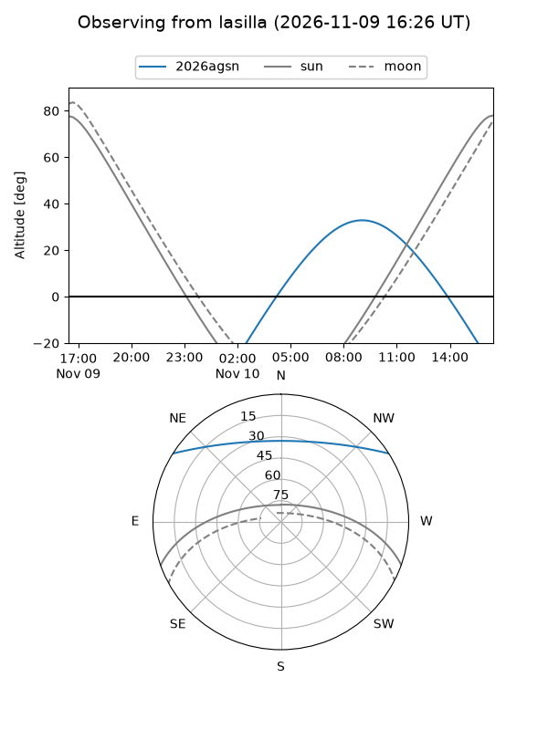
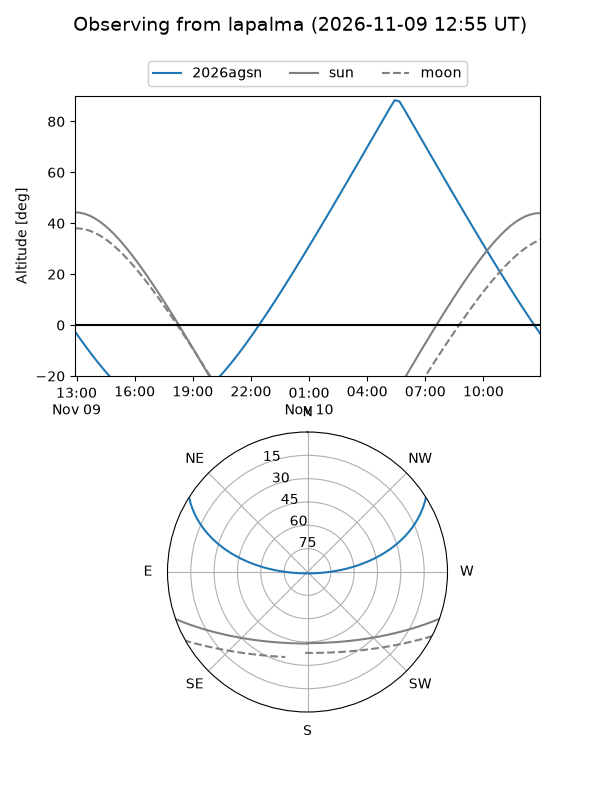
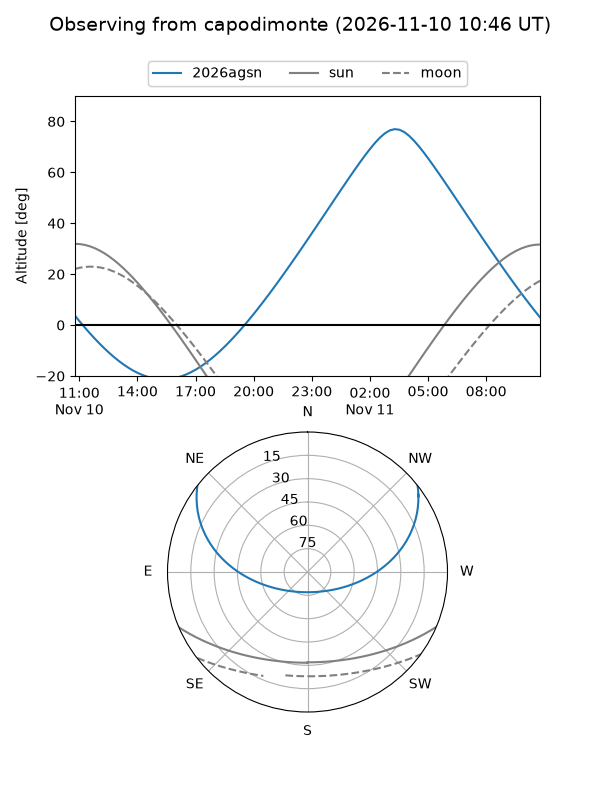
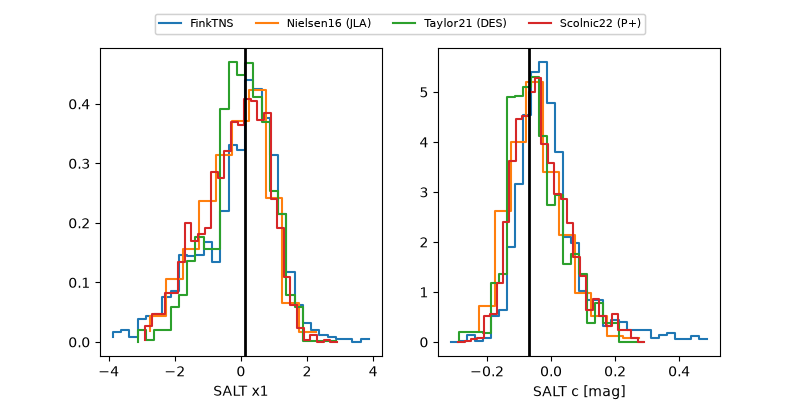

2026agsn
Target 2026agsn at 2026-11-10 08:27
Aliases and brokers:
FINK-ZTF: ztf.fink-portal.org/ZTF26acctsft
Lasair-ZTF: lasair-ztf.lsst.ac.uk/objects/ZTF26acctsft
ALeRCE-ZTF: alerce.online/object/ZTF26acctsft
YSE-PZ: ziggy.ucolick.org/yse/transient_detail/2026agsn
TNS name: wis-tns.org/object/2026agsn
Direct TNS query: direct search
alt names
ZTF26acctsft (ztf,fink_ztf)
2026agsn (tns,yse)
Coordinates:
equatorial (ra, dec) = 113.9190,+27.91270
equatorial (HMS+DMS) = 07:35:40.55,+27:54:45.73
galactic (l, b) = (191.5629,+21.36579)
Flags:
peak dt: +8.1
Photometry:
last ztfg=19.40, ztfr=19.25
8 ztfg, 7 ztfr detections
Lightcurve
Visibility



Additional plots
